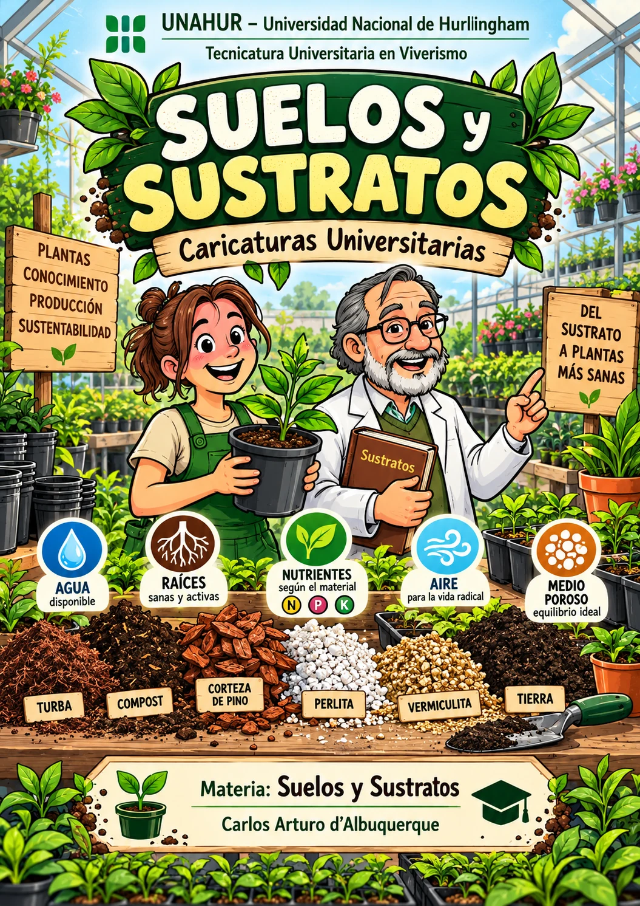

UNAHUR · VIVERISMO · GUÍA DE ESTUDIO 11
Del medio poroso a la calidad de las plantasSUELOS Y SUSTRATOSParte I.
Comprendé qué es un sustrato, cómo se elige y cómo se relacionan sus materiales, el contenedor, el pH y las sales. Veinte temas para estudiar juntos.

ANTES DE EMPEZAR
Elegir un medio. Entender cómo funciona.
El sustrato combina soporte, agua, aire y relaciones químicas que cambian con el cultivo y el manejo. Su calidad se evalúa en contexto.
El recorrido mantiene los veinte temas del índice. Como el índice y las láminas no coinciden uno a uno, cada ficha indica la imagen asociada por contenido. La galería conserva la numeración original. Los casos químicos y el análisis se desarrollan además en la sección de profundización.
01 / TU RECORRIDO DE ESTUDIO
Del 01 al 20, como en el índice.
Elegí una ficha o avanzá paso a paso. Podés marcar las que ya repasaste.
02 / ENCONTRÁ LAS DIFERENCIAS
Una mirada, muchas pistas.
Buscá conceptos, especies y temas sin perder el orden del índice.
| Tema del índice | Idea o ejemplo | Para recordar | Grupo | Descripción |
|---|
Buscá conceptos, materiales y propiedades siguiendo los veinte temas del índice.
PROFUNDIZACIÓN · LÁMINAS 11–20
Química, casos y análisis.
Abrí cada tema para conectar las observaciones con su interpretación.
11 · pH del sustrato
El pH expresa acidez en la solución y se relaciona con disponibilidad de nutrientes. Técnicamente se define a partir de la actividad de H⁺. Un valor menor representa mayor acidez. El rango apropiado depende de la especie; no se toma el gráfico genérico de la lámina como rango universal.
12–13 · Respuesta de especies
El material compara Calibrachoa, petunias y poligalas a distintos pH. Se conserva el ejemplo 5,5–6,2 mostrado para Calibrachoa y petunias y 6,0–6,8 para poligalas como contexto de la lámina, no como receta para cualquier cultivar. Las imágenes con pH 5 no prueban que ese sea el óptimo. Conviene consultar referencias de especie y método.
14 · Basicidad y clorosis
Un pH elevado puede reducir disponibilidad de hierro y favorecer clorosis intervenal en especies sensibles. Ese síntoma también puede tener otras causas. 6,2 no es un umbral universal y un pH de 6,3 sigue siendo ligeramente ácido: se distingue estar por encima del rango deseado de ser químicamente alcalino.
15 · Corrección previa del pH
La lámina explica elevar pH mediante encalado y reducirlo mediante acidificación. La elección requiere analizar material, agua, capacidad tampón y tiempo de reacción. Las leyendas del gráfico de cal presentan inconsistencias, por lo que no se extraen dosis ni relaciones cuantitativas del dibujo. No es un calculador de enmiendas.
16 · Conductividad eléctrica
La CE refleja conductividad de los iones disueltos; se usa como indicador de sales. 1 dS/m = 1 mS/cm = 1.000 µS/cm. No identifica qué iones hay. El agua muy pura tiene conductividad muy baja, no exactamente cero. El límite de 1 dS/m de la imagen es contextual y no se aplica sin método, cultivo y etapa.
17 · Monitoreo rutinario
Registrar pH, CE, temperatura, fecha, método, lote y especie permite seguir cambios. En el caso de pensamientos se muestran pH 7,1 y CE 1,25 dS/m junto con sodio elevado. La CE por sí sola no demuestra sodio alto; eso requiere medición específica. Las decisiones se basan en el conjunto del análisis.
18 · Ejemplos del efecto de la CE
Las plantas de Impatiens se ilustran con 0,9; 1,5 y 2,9 dS/m y diferente vigor. Las mezclas de Salvia splendens presentan resultados distintos. Son ejemplos del material, no una curva universal ni una prueba de que más compost siempre aumente salinidad.
19 · Caracterización química
Los nutrientes pueden estar disueltos, adsorbidos o participar en otros equilibrios. Tanto suelo como sustrato pueden tener reservas e intercambio. Los métodos 1:1,5; 1:2; 1:5 y PourThru no producen resultados directamente intercambiables. La unidad debe aclarar si se refiere al extracto, masa de muestra o volumen de sustrato.
20 · Muestreo y metodología 1:5 v/v
La muestra debe representar el lote, estar identificada y seguir conservación indicada por el laboratorio. El ejemplo estudia una parte de muestra y cinco de agua, agitación de 15 minutos y reposo de 20 minutos. Son condiciones del protocolo de clase, no de todo ensayo. Los valores 50% y 30% de humedad son condiciones de preparación citadas en el material, no objetivos de riego.
20 · Volumen y filtrado: dos precisiones
30 mL de muestra y 150 mL de agua representan una relación 1:5 si se miden por separado. No se presupone que el volumen final sea exactamente 180 mL, porque el agua entra en los poros. Filtrar retira sólidos suspendidos; las sales disueltas y muchos nutrientes permanecen en el filtrado.
PRÁCTICA INTERACTIVA
Relaciones, unidades y escala.
Relación muestra:agua
Ejercicio de proporciones. Cada método tiene su propio protocolo; no calcula el volumen de extracto obtenido.Unidades de CE
Escala logarítmica del pH
03 / HACÉ MEMORIA
Leé la pregunta.
Recordá la idea.
Una tarjeta por tema, en el orden del índice. Intentá responder antes de darla vuelta.
04 / DESAFÍO DEL JARDÍN
Treinta preguntas para conectar ideas.
Veinte preguntas siguen los temas del índice y diez integran los conceptos. Aprendé con cada explicación.
TU MATERIAL DE CONSULTA
Veintidós láminas para explorar.
Portada, índice y veinte láminas completas. La numeración original de las imágenes se conserva.
FUENTES Y PRECISIONES
Mediciones comparables, interpretaciones cuidadosas.
- Método de extracción: pH y CE se interpretan con referencias del mismo procedimiento; una lectura no se convierte de 1:5 a PourThru por una multiplicación fija. UMass: métodos de análisis.
- Sensibilidad al pH: petunia y Calibrachoa figuran entre los cultivos que pueden presentar dificultades de hierro a pH elevado. El intervalo se consulta según cultivo y condiciones. UMass: seguimiento de pH y CE.
- No usar los dibujos como dosificación: las curvas de corrección del pH presentan rótulos que requieren revisión. Se conservan como imágenes originales y no se usan para calcular cantidades de cal o azufre.
- La CE no identifica sodio: es una señal conjunta de iones disueltos. Un diagnóstico requiere además identidad de sales, método y contexto.
- El índice organiza el sitio: algunas fichas reúnen varias láminas; sanidad y riego se desarrollan como principios generales apoyados en las imágenes, sin inventar protocolos ausentes.
Ilustraciones: Carlos Arturo d’Albuquerque · UNAHUR · Suelos y Sustratos. Portada, índice y veinte láminas originales; se incorporó la 007 localizada en la misma carpeta para completar la serie.